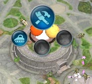

目次 > ゲームについて > シミュレーション攻略 > SPORE > ステージ攻略 > 文明ステージ
| 概要 | 情報 | ステージ攻略 |
| コレクション一覧 | 継承アビリティー一覧 | アチーブメント一覧 |
| SPORE 攻略へ | 目次へ戻る |
| [ 細胞ステージ ] [ クリーチャーステージ ] [ 集落ステージ ] [ 文明ステージ ] [ 宇宙ステージ ] |
| 目的 |
| 自分の星にある全ての都市(国ととらえてもいいかもしれません)を全て占領することが目的となります。 占領といっても、軍事的に攻め落とすだけでなく、改教させたり、買い取ったりすることができます。 集落ステージと違い、全ての都市には自分と同じ種族のクリーチャーのみが存在し、他の種族は全て野生クリーチャーとして登場します。 また、このステージからいよいよ乗り物と自分でデザインした建物が利用可能です。一方で、集落ステージにあった服装による効果がなくなります。 |
| 都市プランナー |
| 都市プランナーでは、建物のデザイン、乗り物のデザイン、国家の作曲、住民の服装のデザイン、そして都市の施設を置く場所を指定できます。  都市に置くことのできる施設は、シティーホール、家、娯楽施設、工場、そして砲台の5 つですが、シティーホールだけは置くことのできる位置が都市の中央と決まっています。 工場を置くと、基本的に住人の好感度が下がりますが、都市の収入が増えます。シティーホールや家と隣接している場合、隣接している数だけ収入が増えていきます。しかし、娯楽施設と隣接していると、隣接している数だけ好感度が下がってしまいます。 娯楽施設を置くと、基本的に住人の好感度が上がりますが、それ以外には何も生み出しません。シティーホールや家と隣接していると、その数だけ好感度が上がりますが、工場と隣接していると、その数だけ好感度が下がってしまいます。 都市プランナーでの施設の設置はある種のパズルなので、収入の量と好感度のバランスを考えながら、効率よく都市を設計してください。住民の意見を無視して工場ばかり作っても、住民が不満を訴え生産量が減ってしまいます。 砲台はあればあるほど防衛力が上がりますし、置いたところで住人の好感度に変化はないので、軍事的な国家の場合は設置できるだけ設置しましょう。 (抗議する住人たち) |
| スパイス確保と新技術 |
| 大陸の所々にスパイス間欠泉があります。そこに自国の掘削装置を置くことができれば、安定した収入源になります。 そのため、スパイス間欠泉はできるだけ早く確保することをおすすめします。 スパイス間欠泉を確保するには、間欠泉のある場所に乗り物を移動させ、表示されるメーターがいっぱいになれば確保できます。軍事的、経済的、宗教的のどのタイプの乗り物でも確保できます。 しかし、確保したからといって安心はできず、他の国にスパイス間欠泉を奪われることもあるので注意してください。 大陸の所々にまだ文明ステージの段階に達していない集落が存在します。このような集落の中には、なぜか自国にはないすばらしい技術を持っているところがあります(自国が持っていない商業用の乗り物など)。 そのため、積極的にそのような集落へ乗り物を移動させ、新技術を手に入れるといいでしょう。特に、継承アビリティーを変化させたい場合は、新技術の入手は必須となります。 しかし、中には文明化が近く、乗り物を攻撃してくる集落があります。このような集落は近々文明ステージに移動する集落なので、新技術の入手はあきらめて、他を当たってください。 |
| 軍事的占領 |
| 他の都市を軍事的に占領する場合、当然のことながら軍事系の乗り物が必要です。 軍事的な乗り物が、占領したい都市の建物、砲台を全て破壊し終わると、シティーホールの攻撃に移ります。 そして、上の画像のようなバーの色が自国の色で埋まれば制圧完了です。軍事的な占領では、あらかじめ多くの建物を破壊しなければならないので、発展している都市の制圧には時間がかかってしまいます。 |
| 宗教的占領 |
| 他の都市を宗教的に占領する場合、当然のことながら宗教系の乗り物が必要です。 軍事的な乗り物が、占領したい都市の娯楽施設と砲台を全て破壊し終わると、シティーホールに対して改教するように圧力をかけ始めます。 そして、上の画像のようなバーの色が自国の色で埋まれば制圧完了です。軍事的な占領に比べると、破壊しなければならない建物が少ないので、楽といえば楽かもしれません。 |
| 経済的占領 |
| 占領するのではなく、実際にはスポアバックスで都市を買い取ることになります。 まず、経済系の乗り物を占領したい都市へ派遣し、交易ルートを確立します。無事に、交易ルートをすると、相手の都市に下の画像のようなバーが出現し、これが自国の色で埋まれば都市を買い取れます。当然、輸送に使っている乗り物の数が多いほどバーの埋まる速度は増します。 ただし、相手の都市が満足行くような価格を提示できないと、バーが初期状態に戻ってしまい、はじめからやり直しとなるので、スポアバックスはしっかりと用意するといいでしょう。 また、相手の都市との関係が、黄色い顔以下だと交易ルートを確立できない場合が多いので、贈り物をするなどしてあらかじめ関係を向上させておくことも必要です。 (黄色い顔) |
| 壮大なクリーチャー |
| クリーチャーステージ以来、色々と苦労させられてきた「壮大な○○」という名前のクリーチャーが文明ステージにも登場します。しかも、体力が増えて、攻撃力も上がっています。 このクリーチャーへの対策として、軍事系の乗り物ならば(犠牲は非常に大きくなりますが)倒してしまえばいいですし、宗教系の乗り物ならば(軍事系に比べれば幾分ましな被害で)一時的に洗脳(改教)させ、無力化することができます。 しかし、経済系の乗り物では、壮大なクリーチャーに対抗するすべが全くありません。そのため、もし交易ルートの上を壮大なクリーチャーがウロウロしている場合は、涙をのんで壊されるたびに乗り物を補充するか、あらかじめ用意した軍事系・宗教系のビーグルを派遣するかして対応ください。 (洗脳) |
| [ 細胞ステージ ] [ クリーチャーステージ ] [ 集落ステージ ] [ 文明ステージ ] [ 宇宙ステージ ] |
| 概要 | 情報 | ステージ攻略 |
| コレクション一覧 | 継承アビリティー一覧 | アチーブメント一覧 |
| ページの上部へ | SPORE 攻略へ | 目次へ戻る |